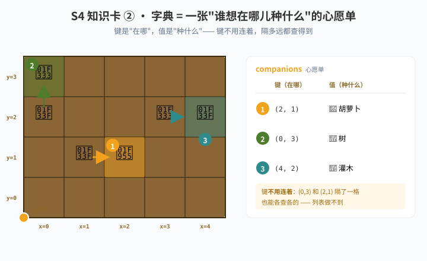
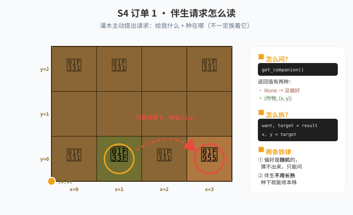
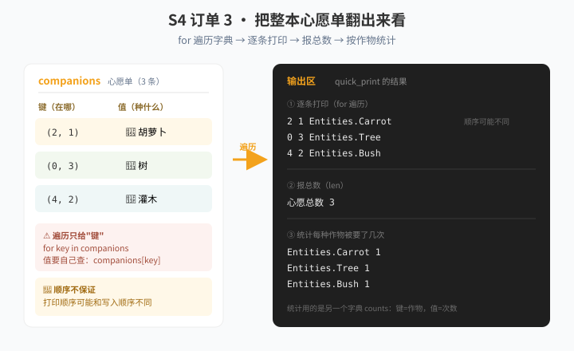

🎮 游戏进度 · 这一关解锁什么
📌 课前在游戏里做这些事
- 解锁 混种（Polyculture）——需要攒够胡萝卜才能解锁。
- 在草、灌木、树、胡萝卜这 4 种作物旁边试种不同作物，看产量数字有什么变化。
- 注意：南瓜、向日葵、仙人掌不吃伴生这套，只有草/灌木/树/胡萝卜参与。
- 解锁 水（Items.Water）——伴生加成基础上再浇水，产量还能再翻。
- 记一条关键规则：伴生作物不需要长熟，只要收获时它在那儿就行。
📖 知识卡 · 6 张
① 元组：把两个值打包成一组
列表用 [ ]，元组用 ( )。元组里的每一项也有下标，从 0 开始。
pos = (3, 5) # 一个元组：第 1 个是 3，第 2 个是 5
print(pos[0]) # 3
print(pos[1]) # 5
x, y = pos # 解包：一句话拆成两个变量
# x = 3, y = 5元组和列表最大的区别：元组一旦创建就不能改（游戏里基本都用元组，因为它更省事）。
② 字典：用"位置"查"要种什么"
列表是"按顺序排的一排"，字典是"按名字查"。字典的每个格子有两半：键（key）和值（value）。
先看一个跟农场有关的字典——它记的是"谁想在哪儿种什么"：

companions = {}
# 这是一个空字典，里面还没有任何记录
# —— 写入 ——
# 灌木 A 说："我想在 (2, 1) 那格种胡萝卜"
companions[(2, 1)] = Entities.Carrot
# 灌木 B 说："我想在 (0, 3) 那格种树"
companions[(0, 3)] = Entities.Tree
# 现在字典里长这样（对应上图右边那张表）：
# 键(在哪) → 值(种什么)
# (2, 1) → Entities.Carrot
# (0, 3) → Entities.Tree
# —— 读取 ——
want = companions[(2, 1)] # → Entities.Carrot
quick_print("(2, 1) 那格要种", want)
# 查在不在
if (2, 1) in companions:
quick_print("有人点名要这一格")
if (5, 5) in companions:
quick_print("这格没人要") # 这句不会执行字典和列表最大的不同：列表要靠下标找东西（第 0 个、第 1 个…），字典要靠键找东西。
而且键不用连着——上面 (0, 3) 和 (2, 1) 之间隔了一整格也没关系，这是列表做不到的（列表要连续）。
字典的键可以是元组——所以 (2, 1) 这种"坐标"能直接当键用，不需要先转成字符串。
③ get_companion()：怎么读它给的东西
站在任意一株参与混种的作物上调用它，会返回两种东西之一：
result = get_companion()
if result == None:
# 这株没有伴生偏好（或不是参与混种的作物）
...
else:
want, target = result # 第一层解包：want=作物，target=坐标
x, y = target # 第二层解包：坐标拆成 x 和 y
# 现在你知道：在 (x, y) 那格种 want关键：伴生偏好是随机的，每株都不一样，猜不出来——只能一株一株问。伴生在 3 格以内，而且不能跟自己是同一种。
④ 字典的三板斧：查 / 写 / 销账
接着上面那个字典往下走——三条命令，学生只需要记这三条：
# 查：这格有没有人在等伴生
if (2, 1) in companions:
want = companions[(2, 1)]
# 写：记下"我要 (x, y) 那格种 want"
companions[(4, 2)] = Entities.Bush
# 销账：读出来同时删掉（pop = 取出来 + 删掉）
want = companions.pop((2, 1))pop() 一次干两件事：取出值 + 删掉这一条。混种里正好用它——一个伴生请求只会被满足一次。
执行完最后这行，字典里就只剩 (0, 3) 和 (4, 2) 两条了——(2, 1) 那条已经被兑现掉了。
⚠️ 游戏里没有的字典方法这个游戏只实现了三个方法：in、[]=、pop()，外加全局 len()。
d.items()、d.keys()、d.values()、d.get() 全部都不存在——写了会直接报错。
真实 Python 里这些都有，但这一关只能用游戏给的。
⑤ 遍历字典：把整本心愿单翻出来
心愿单攒到几十条以后，你得能把它整本翻一遍——看谁还欠着伴生、统计每种作物被要了几次。这就要用到 for 遍历字典。
for key in companions: # 遍历字典：每次拿到一个"键"
want = companions[key] # 想看值？得自己再查一次
quick_print(key, want)注意：for 遍历字典只会给你键（就是"在哪儿"），不会同时给你值（"种什么"）。
所以想看值，必须再查一次：companions[key]。
为什么没有 items()？游戏没实现。真实 Python 里 for k, v in d.items(): 一次能拿到键和值，但这里只能拿键。
我们的键恰好是元组 (x, y)，而 Python 的 for 遇到元组会自动拆开——所以可以直接这么写：
for x, y in companions: # 元组键自动解包，等价于 for key in ...
quick_print(x, y, companions[(x, y)])但要当心：for x, y in companions: 拆出来的是坐标，不是"要种什么"。
要拿到作物，还是得写 companions[(x, y)]。
📌 字典是"无序"的遍历出来的顺序不保证是写入的顺序。
所以不能用字典来记录"第几个"——需要顺序就用列表（append 那种）。
游戏官方文档原话："There are no guarantees about the order in which the keys are iterated."
⑥ 计数器字典：统计"每种作物被要了几次"
心愿单翻多了，常常要回答另一个问题——"哪种作物最抢手？"。这还是老套路：键查值，只是把键从"坐标"换成"作物"。
counts = {} # 空的计数器字典
for key in companions: # 还是老规矩：遍历只给键
want = companions[key] # 值要自己查
if want in counts: # 这种作物以前出现过吗？
counts[want] = counts[want] + 1
else:
counts[want] = 1 # 第一次见，记 1 次为什么"计数"要用字典，不用列表？因为要回答的是"胡萝卜被要了几次"——这是按名字查，跟心愿单一模一样的思路。
列表能做到吗？也能，但要从头翻到尾去找"胡萝卜在哪"，慢而且啰嗦。
同一个字典可以有两种键：心愿单用坐标当键，计数器用作物当键。字典的键可以是任何能当键的东西。
goto(x, y)想学会定义自己的函数、再把它拆到另一个文件里用
import 搬进来吗？去 特殊订单 2 · goto(x, y) 自制函数 —— 那是函数和 import 的正式主场。
🚜 农场订单 · 闯关任务
问一株：读懂伴生请求

🧩 起步骨架（点开前先自己想）
只有下划线空位是要你填的。走路、翻土、种下、收获这些老套路已经写好了——真正要你动脑的是怎么把返回值拆开。
# ① 在田里找到一株灌木，站到它旁边 # （两层 for 扫田，看 get_entity_type() == Entities.Bush） # # ② 把灌木的位置记下来 —— 等会儿要回来收它 # （提示：get_companion() 只告诉你伴生在哪，不会告诉你灌木原来在哪） bush_pos = (get_pos_x(), get_pos_y()) # ③ 问它想要什么 result = get_companion() # ④ 如果 result 不是 None，就拆开它 if ____________: want, target = ____________ # 第一层：拆出"要种什么"和"在哪一格" x, y = ____________ # 第二层：把坐标拆成 x 和 y # ⑤ 走到伴生那一格（先横后竖：先把 x 走到位，再把 y 走到位） while get_pos_x() != x: if get_pos_x() < x: move(East) else: move(West) while get_pos_y() != y: if get_pos_y() < y: move(North) else: move(South) # ⑥ 种下它想要的（胡萝卜要种在翻过的土上） if want == Entities.Carrot and get_ground_type() != Grounds.Soil: till() plant(want) # ⑦ 走回灌木那里，收获 —— 这一步就有 5 倍加成 # （伴生不用长熟，种下就能收） bx, by = bush_pos while get_pos_x() != bx: if get_pos_x() < bx: move(East) else: move(West) while get_pos_y() != by: if get_pos_y() < by: move(North) else: move(South) harvest()
填空提示：三处空都是本关的知识点。
第一个空是判断——get_companion() 可能返回 None（这株没偏好），也可能返回一个元组。所以判断要写成"它不是 None"。
第二、三个空都是解包：返回的是两层结构——第一层拆出 want 和 target，第二层才把 target 拆成 x 和 y。
伴生作物不用等它长熟——种下去就能立刻收本株。这是很多人白等好几轮的原因。
字典记账：一次扫完全田
正确做法：用一个字典当"心愿单"。扫到每一格时—— ① 先看字典里有没有人点名要这格，有就种它要的； ② 没有才种主作物，然后问它想要什么，把请求记进字典。
整轮扫完，字典里会攒下一堆"谁要在哪种什么"的心愿——下一轮扫描时自动兑现。
🧩 起步骨架（点开前先自己想）
为什么必须用字典，不能用列表？
你的心愿单要回答的问题是"(3, 5) 这格要种什么？"——这是按坐标查，不是"按顺序找"。
用列表的话，你得把整个列表从头翻到尾去找那一格，格子一多就又慢又难写；用字典，一下就查到了。
记住这句口诀：键是"在哪"，值是"种什么"。
顺带认识一下 def（本关只用到这一种写法）：
def 名字(参数): 是"把这一段打包，起个名字"；调用时写 名字(实参)。
下面骨架里的 plant_tile(main_crop) 就是"种一格"这个动作——main_crop 是占位符，调用时才决定种什么。
为什么要打包？因为"种一格"这套动作要写很多遍，每写一遍可能改漏一处；打包成函数后只改一个地方。
# ① 心愿单：一个空字典
# 键 = 坐标，值 = 要种的作物
companions = {}
def plant_tile(main_crop):
pos = (get_pos_x(), get_pos_y())
if can_harvest():
harvest()
# ② 先问字典：这一格有没有人点名要伴生？
if ____________ in companions:
# 有 —— 把它的愿望取出来，顺便销掉这条账
# （pop = 取出 + 删除，一个请求只兑现一次）
want = companions.______(pos)
# ③ 种下它想要的（胡萝卜要先翻土）
if want == Entities.Carrot and get_ground_type() != Grounds.Soil:
till()
plant(want)
# ④ 这格已经让给伴生了 —— 主作物不能再种
# （想想这里该写什么，才能让下面那段不执行）
________________
# ⑤ 没有人才轮到主作物
# （胡萝卜要先翻土；翻土的规矩和 S3 一样）
if main_crop == Entities.Carrot and get_ground_type() != Grounds.Soil:
till()
plant(main_crop)
# ⑥ 再问问这株想要什么，记进字典
result = get_companion()
if result != None:
want, target = ____________
# ⑦ 别让两株植物抢同一格
if ____________ not in companions:
companions[______] = want
# ⑧ 用一个函数把全田扫一遍：每格调一次 plant_tile，每行末尾往北挪一格
填空提示：
② 第一个空是"这一格的坐标"——就是上面那个 pos。
② 第二个空是取出并删除的那个方法（pop）。
④ 那个空是 return——这格让给伴生了，直接结束这一格的处理，下面主作物那段就不会执行。
⑥ 第一个空是两层解包；⑦ 第一个空是坐标；⑦ 第二个空是键（"在哪"）。
为什么 ⑦ 要先判断"没被占"？因为两株植物可能都想在同一个位置种伴生。不判断的话，后来登记的那个会把先前的覆盖掉，先前的那个心愿就永远等不到了。
为什么不能"走过去种完再走回来"？因为你种下伴生时，会把那格原来作物的心愿弄丢。用字典记账就不会互相踩。
心愿单盘点：把整本字典翻出来看
具体要你做三件事：
① 逐条打印：每条心愿打印"坐标 + 要种什么"；
② 报总数：打印心愿单里还剩几条；
③ 统计：数一数每种作物分别被要了几次。

🧩 起步骨架（点开前先自己想）
只有下划线空位是要你填的。打印、计数这些老套路已经写好；真正要想清楚的是"遍历字典到底给我什么"。
companions = {}
# 假设扫完一轮，字典里已经攒了这些心愿（下面三条是举例）
# companions[(2, 1)] = Entities.Carrot
# companions[(0, 3)] = Entities.Tree
# companions[(4, 2)] = Entities.Bush
# ① 逐条打印：把整本翻一遍
# （提示：for 遍历字典给你的是"键"，也就是坐标）
for ____________ in companions:
# ② 把坐标拆开，并且取出这条心愿要种什么
x, y = ____________
want = ____________
quick_print(x, y, want)
# ③ 报总数：心愿单里还剩几条
quick_print("心愿总数", ____________(companions))
# ④ 统计：每种作物被要了几次
# （再开一个字典当"计数器"：键=作物，值=次数）
counts = {}
for key in companions:
want = companions[key]
if want in counts:
counts[want] = counts[want] + 1
else:
counts[____________] = 1
# ⑤ 把统计结果也打印出来
for key in counts:
quick_print(key, counts[key])
填空提示：
① 那个空是循环变量——你打算把"键"存进哪个变量？
② 第一个空是刚才那个循环变量（键是元组，要拆成 x 和 y）；第二个空是"用这个坐标去查字典"。
③ 那个空是长度函数——跟 S3 量列表长度用的是同一个 len()。
④ 最后一个空是作物本身——第一次见到它，要把它记成"出现过 1 次"。
为什么统计要再开一个字典？因为你要回答的是"哪种作物出现了几次"——还是"键查值"的老套路：键=作物，值=次数。
注意：游戏里没有 items()，所以遍历只能拿键，值要自己查。
📄 输出长什么样（对照着写，别纠结顺序）
下面是一种可能的样子（心愿单内容固定，但打印顺序不固定）：
2 1 Entities.Carrot
0 3 Entities.Tree
4 2 Entities.Bush
心愿总数 3
Entities.Carrot 1
Entities.Tree 1
Entities.Bush 1三个必须知道的细节：
① print / quick_print 的多个参数之间用空格隔开，不会自动加逗号。
② 坐标被拆成了 x 和 y 两个数打印，所以是 2 1 而不是 (2,1)。
③ 顺序会变：字典是无序的，三条心愿可能按任何顺序打出来。
只要 7 行内容都在、总数对，就算过——不要去对顺序。
进阶玩法：想一次拿到"键和值"？真实 Python 的 d.items() 这里用不了。但你可以把"作物"直接当键——订单 3 的第 ④ 步就是这么干的。
🔧 常见报错 · 卡住了先看这里
TypeError: cannot unpack non-sequence → 解包层级搞错了。get_companion() 返回的是两层：先拆出 want, target，再从 target 拆出 x, y。
没有 None 判断直接解包 → 会报 TypeError。不是每株都有伴生偏好，必须先判 None。
伴生种下了但没加成 → 两种可能：伴生种的位置不对（坐标要照它给的来）；或者先收后种——伴生必须在收获之前就在那格。
胡萝卜伴生没生效 → 胡萝卜要种在翻过的土上。种之前先 till()。
KeyError → 用 companions[pos] 查一个字典里没有的键。要么先用 if pos in companions: 判断，要么用 pop()（它对不存在的键也不会报错，但这里还是先判断更清楚）。
产量还是 5 倍没有叠加 → 混种等级没升。每升一级混种，倍率翻倍（5 → 10 → 20…），要拿胡萝卜去升级。
items 未定义 / items is not defined → 用了真实 Python 的写法。这个游戏没有 d.items()，也没有 keys() / values() / get()。
改成老套路：for key in d: 拿键，再 d[key] 取值。
遍历出来的顺序不对 / 结果每次都不一样 → 正常！字典是无序的，官方文档明确说"键的迭代顺序没有任何保证"。
需要稳定顺序就用列表，别用字典。
统计次数总是 1 → 计数器的键写错了。键必须是"作物"本身（counts[want]），不是坐标——坐标每条都不一样，永远计数不到一起。
🚪 自查门
🧠 换需求测试 · 真会了才过
- 换主作物：把字典方案里的主作物从树换成灌木或胡萝卜，代码要改几处？
- 换伴生规则：改成"自己种什么就把心愿写在自己这格"，行不行？会出什么问题？
- 两个作物抢同一格：如果两株植物请求同一格，你的字典会怎样？该加什么判断？
- 顺序题：订单 3 的输出顺序和学生预期不一样，为什么？要保证顺序该怎么办？
- 统计题：把计数器字典的键从"作物"换成"坐标"，会发生什么？
- 口述题：为什么伴生作物不用长熟也能加收益？这件事在代码里体现在哪？
📌 老师注记混种是第一个"规则由程序告诉你"的关卡——偏好随机，学生没法推导，只能调 API 读。
这正好引出字典：坐标当键、作物当值，把"谁要什么"这类"配对关系"存下来。字典是列表的自然升级——S3 存"一排数据"，S4 存"对应关系"。
字典那三个操作（in / []= / pop()）学生一次记不住很正常，订单 2 必须写出来才算过。
本关最容易踩的坑是 items()：学生一看"遍历字典"就条件反射写 d.items()——这个游戏没有这个方法，一写就报错。知识卡 ⑤ 要反复强调"遍历只给键"。
骨架只挖判断和字典操作——走路、翻土、种下这些都是 S2/S3 学过的老套路，写成完整代码；学生真正要想的是"先查还是先种"和"怎么拆两层"。
订单 3 的输出顺序不固定，这是特性不是 bug——判卷只看"内容齐不齐 + 总数对不对"，不要让学生去对顺序。